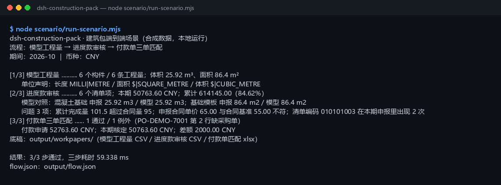

真实运行截图

上图是 node scenario/run-scenario.mjs 的真实输出，不是示意图（原始终端文本）。数据全部为 DEMO-* / 虚构清单编码的合成值。
这个包解决什么
同一期（2026-10）的模型、申报和付款申请，由三个插件接力；脚本把同一份数据在三个插件之间传递，而不是三个样例各跑一遍。
它不替你做计价、结算审核或监理签认：变更签证、索赔、质量扣款、税率和支付比例仍需合同条款与人工判断。模型量只作申报量对照，不是计价依据。
你需要准备什么
把文件放进 04-build/dsh-construction-pack/scenario/data/ 对应目录，保持表头不变。
| 文件 | 放在哪里 | 最少需要的列 / 字段 |
|---|---|---|
| IFC 模型 | model/ | IFC4 文本（ISO-10303-21），带 IfcUnitAssignment 和 IfcQuantityLength/Area/Volume |
| 本期申报 | progress/ | 清单编码,名称,单位,合同量,合同单价,本期完成量,累计完成量 |
| 合同基准 | progress/ | 清单编码,合同量,合同单价；一条清单一行 |
| 付款申请 / 采购单 / 收货单 | ap/ | supplier,invoice_no,po_no,line_no,qty,unit_price,amount；PO/GRN 见样例表头 |
数量最多 3 位小数，金额最多 2 位小数；金额内部按整数分计算。表头可用中文或英文，列顺序随意。
样例数据里的“坑”是故意的：矩形柱累计超合同量、基础模板单价与合同基准不符、挖沟槽土方重复两行、付款申请第 2 行没有采购单。改数据前先读 scenario/data/README.md。
三步操作
先运行同一条命令（脚本一次跑完）：
$ cd 04-build/dsh-construction-pack $ node scenario/run-scenario.mjs
屏幕上是 [1/3]～[3/3] 三段；下面每段对应一步。
第 1 步：模型工程量（dsh-ifc-qto）
对应 [1/3] 段
[1/3] 模型工程量 .......... 6 个构件 / 6 条工程量；体积 25.92 m³、面积 86.4 m²
单位声明：长度 MILLI|METRE / 面积 $|SQUARE_METRE / 体积 $|CUBIC_METRE
IFC 里有 2 面墙、1 块楼板、1 扇门、1 扇窗、1 根柱；工程量实体汇总出体积 25.92 m³、面积 86.4 m²、长度 8100 mm。单位声明完整，所以第 2 步可以放心拿模型量做对照。样例模型里有一条 0 值工程量（NetSideArea），会以 E_IFC_QUANTITY_NON_POSITIVE 提示，不影响合计。
第 2 步：进度款审核（dsh-progress-payment）
对应 [2/3] 段
[2/3] 进度款审核 .......... 6 个清单项；本期 50763.60 CNY；累计 614145.00（84.62%）
模型对照：混凝土基础 申报 25.92 m3 / 模型 25.92 m3；基础模板 申报 86.4 m2 / 模型 86.4 m2
问题 3 项：累计完成量 101.5 超过合同量 95；申报合同单价 65.00 与合同基准 55.00 不符；
清单编码 010101003 在本期申报里出现 2 次
申报 7 行 / 6 个清单项，合同基准 6 项。本期金额 50,763.60 CNY，累计 614,145.00 CNY，占合同额 725,750.00 CNY 的 84.62%。三个阻塞问题：矩形柱累计超合同量（E_PROGRESS_OVER_QTY）；基础模板申报单价与合同基准不符（E_PROGRESS_PRICE_MISMATCH，本期金额已按 55.00 重算）；挖沟槽土方重复两行（E_PROGRESS_DUP_ITEM，只计第一行）。底稿里重复行标 是否计入=否。
第 3 步：付款单三单匹配（dsh-ap-three-way，可选）
对应 [3/3] 段
[3/3] 付款单三单匹配 ...... 1 通过 / 1 例外（PO-DEMO-7001 第 2 行缺采购单）
付款申请 52763.60 CNY；本期核定 50763.60 CNY；差额 2000.00 CNY
付款申请两行：第 1 行 50,763.60 CNY 与采购单、收货单一致，通过；第 2 行 2,000.00 CNY 没有采购依据（po_missing），退回。第 2 步核定多少，第 3 步就只认多少；差额单独列出来，不会自动改申报金额。
结果文件
| 路径 | 内容 |
|---|---|
output/flow.json | 本次运行的完整链路：每步输入、输出、耗时、状态、产物清单 |
expected/flow.json | 金标；测试剔除时间字段后逐字段比对 |
output/workpapers/model-quantities.csv | 模型工程量：构件类型计数 + 长度/面积/体积明细 |
output/workpapers/progress-audit-2026-10.csv | 进度款审核底稿：7 行申报 + 表头，重复行标 是否计入=否 |
output/workpapers/construction-ap.xlsx | 付款单三单匹配底稿：Matches / Exceptions 两张表 |
output/ 每次运行重建，已在 .gitignore 中忽略；金标在 expected/flow.json，不要被覆盖。
出错怎么办
| 报错 | 通常原因 | 下一步 |
|---|---|---|
E_IFC_UNREADABLE / E_IFC_UNIT_MISSING | 不是 IFC4 文本，或缺单位声明 | 用设计院导出的 IFC4 文本；先跑 ifc.unit_check 看长度/面积/体积单位 |
E_PROGRESS_CSV_ROW | 申报/合同 CSV 缺列、金额或数量格式不对 | 对照样例表头；数量最多 3 位小数、金额最多 2 位小数，不要带单位 |
E_PROGRESS_OVER_QTY | 本期或累计完成量超过合同量 | 核对合同量和变更签证；超量部分走变更或结算，不在本期支付 |
E_PROGRESS_PRICE_MISMATCH | 申报单价与合同基准不一致 | 本期金额已按合同单价重算；让申报方改正或确认合同版本 |
E_PROGRESS_DUP_ITEM | 同一清单编码出现多次 | 确认哪一行是本期应报的；底稿里重复行已标“否”，不会重复计钱 |
AP 的 po_missing / qty_over_grn | 付款申请没有对应采购单或超收货量 | 补采购依据或退回该行；不要为了过匹配改金额 |
| 其他错误 | 文件权限、临时目录或数据版本变化 | 保留完整报错和 output/flow.json，先读错误里的“下一步”，不要删原始文件 |
三个插件
仓库内完整中文说明：04-build/dsh-construction-pack/README-zh.md；英文简版：README.md。运行与测试命令：
$ node scenario/run-scenario.mjs $ node --test test/*.test.mjs $ node scenario/run-scenario.mjs --write-expected # 有意改动输出后重建金标